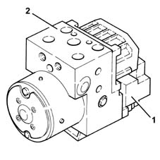
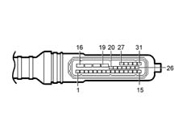
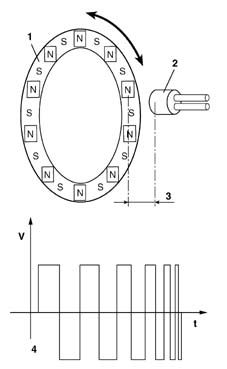
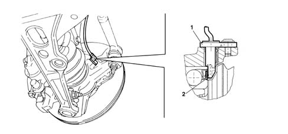
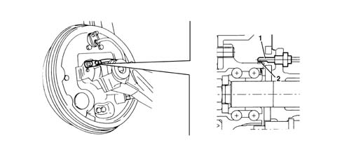

3340A abs check/adjustment devices
- Path
- Descriptions > 33 BRAKING SYSTEM > 3340 A(B.S. ANTI-LOCK BRAKING SYSTEM .) > 3340A abs check/adjustment devices
- Kind
- system description
- Applies to
- all engines; all production periods
- Interactive page
- https://sloeber94.github.io/elrnDB-fMltpl/en/#/2888264
Applies to: all engines; all production periods
ELECTRO-HYDRAULIC UNIT
This consists of an electronic cotnrol unit (1) and an electro-hydraulic control unit (2).

Electronic control unit
The electronic control unit has the functions of:
- acquiring the data coming from the "active" wheel rpm sensors
- memorizing the control parameters defined during the preparation of the vehicle
- memorizing the control software
- processing the data acquired
- controlling the braking process
- detecting failures at the braking system components
- memorizing the fault codes and activating the A.B.S. and EBD warning lights.
- transmitting and receiving data via the diagnostic connector
- conversing with the injection control unit.
Electro-hydraulic control unit
The electro-hydraulic control unit consists of:
- eight two-way solenoid valves
- a dual circuit electric recovery pump
- two low pressure accumulators
- two high pressure accumulators
It has the function of modulating the pressure of the fluid at the brake calipers via the solenoid valves during the following stages:
- brake fluid pressure increase
- brake fluid pressure maintenance
- brake fluid pressure discharge.
Pin out
-

1, Right rear wheel rpm sensor supply 2, Right rear wheel rpm sensor signal 3, Not connected 4, Right front wheel rpm sensor supply 5, Right front wheel rpm sensor signal 6, Left front wheel rpm sensor supply 7, Left front wheel rpm sensor signal 8, Left rear wheel rpm sensor supply 9, Left rear wheel rpm sensor signal 10, Not connected 11, Diagnostic line K 12, Diagnostic line L 13, Not connected 14, Brake pedal switch positive 15, Control unit positive 16, Earth 17, Positive from battery (+ 30) 18, Positive from battery (+ 30) 19, Electronic earth 20, A.B.S. warning light 21, EBD warning light 22, Not connected 23, Not connected 24, Not connected 25, Not connected 26, Not connected 27, Not connected 28, Not connected 29, Not connected 30, Not connected 31, Not connected
ACTIVE SENSORS
Construction features
They consist of two basic elements:
- a magnetic multi-polar codifier (1) integrated in the "instrument" wheel hub bearing
- a "magnetic-resistive" receiver (2) opposite the codifier.
Operation
The operation of the sensor is based on the variation in the internal electrical resistance depending on the intensity and the direction of the lines of force of an external magnetic field, producing a variable square wave singnal whose frequency depends on the rotation speed of the wheel, but whose range is constant.

1, Magnetic coder 2, Magnetic resistive receiver 3, Gap 4, Output signal
Technical advantages
The adoption of active sensors offers the following advantages:
- it reduces sensitivity to electro-magnetic interference
- the capacity to measure the speed of the wheel down to 0
- less sensitivity to the distance between the sensor and the magnetic ring
- it produces savings in weight and size
- it simplifies the transnmission couplings through the elimination of the flywheels.
Front active sensors
-

1, Magnetic coder 2, Magnetic resistive receiver
Rear active sensors
-

1, Magnetic coder 2, Magnetic resistive receiver